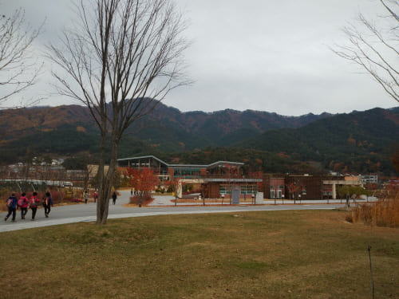
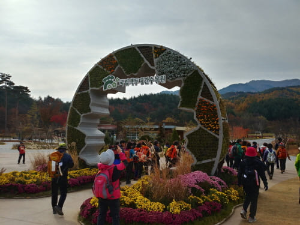
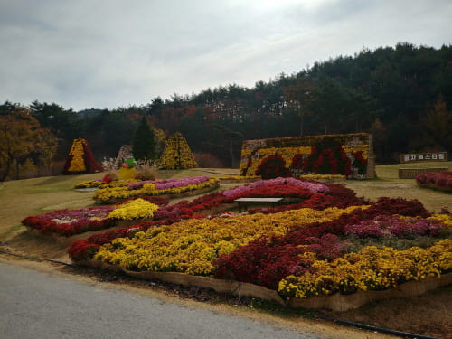
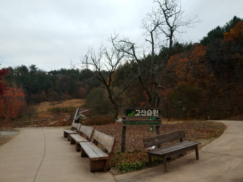
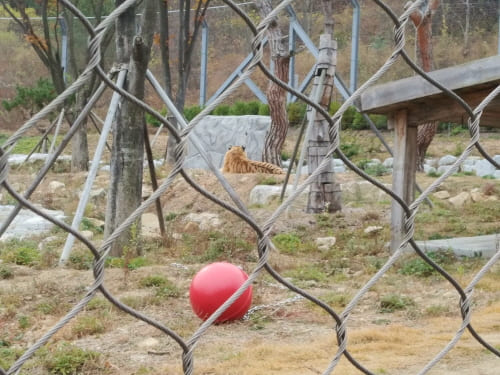
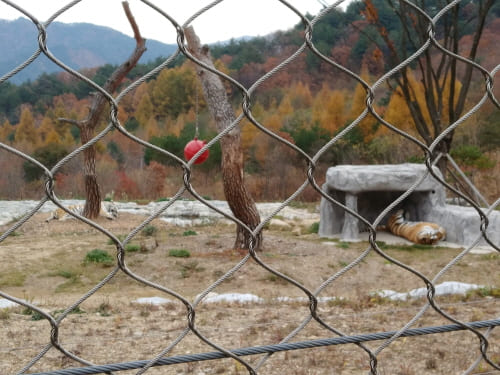
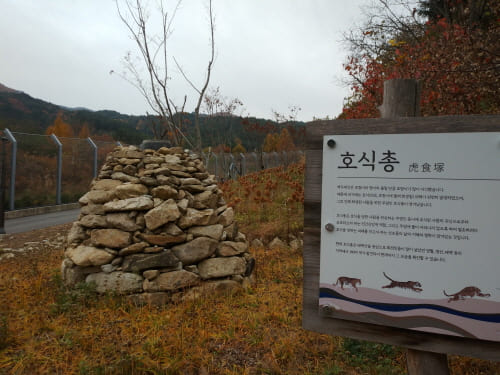
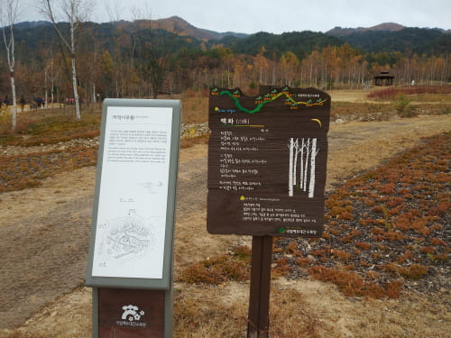
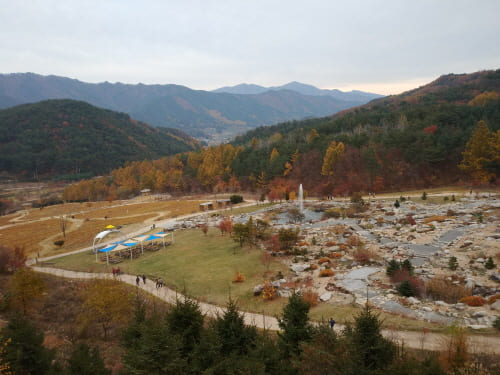
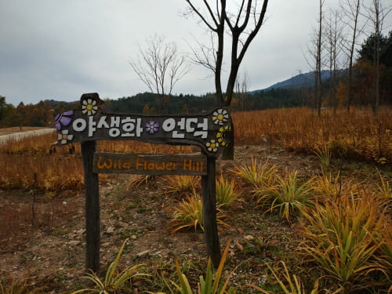

Gallery
백두대간 수목원 / 오후 일정

방문자센터
산세와 어우러진 지붕이 멋스럽다

국립백두대간 입구
꽂장식이 아름답다

봉자페스티벌
페스티벌을 한후라 아름답게 꽃장식이 멋지다

고산습원
멀리 억새가 보인다

호랑이 숲
잠을 자고 있는듯 조용하다

호랑이 암수
따로 떨어져 잠을 자고 있다

호식총
옛날에는 호랑이가 많아 희생당한 사람이 있었나보다

자작나무숲
아짖은 키가 작다

암석원
암석이 많네 / 분수가 멋지다

야생화언덕
야생화를 자연스럽게 조성했나 보네